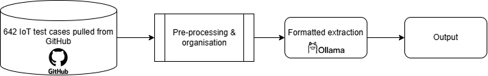

Extracting smart device behaviour from IoT test cases using Large Language Models
Author: Matthew Tan Yin Sian
Thank you to Rufeng Chen, Dr. Lili Wei, and Dr. Steven Ding for your support throughout this project.
Introduction
The Internet of Things (IoT) is the network of smart devices connected via the internet that provide a cohesive experience to an end-user. They are managed by software platforms such as Home Assistant, OpenHAB and IFTTT. One challenge with the development of IoT software is the heterogeneity of devices and their communication protocols [1]. Due to this, there is often difficulty in understanding the behaviour of the smart devices, leading to difficulty of IoT software testing with an observed average statement coverage of 65.2%, branch coverage of 53.5%, and mutation score of 39.9% [2]. An automated testing suite can help improve these testing scores within IoT software. The approach taken for this research problem is to simulate the smart devices and use them for behavioural testing against IoT platforms. In order to do this, the expected behaviour of the devices need to be understood to accurately depict the response it will have to certain commands.
Methodology
To accurately simulate the smart devices, we can make use of existing test scenarios within the IoT platform repository to extract their semantic behaviour. This process is done with the following workflow (fig. 1), making use of a Large Language Model (LLM). This project was done using a locally hosted Ollama gpt-oss (120b).
Workflow:- Extract test cases from Home Assistant GitHub repository
- Pre-process the data to identify the important states of the hardware
- Feed the processed data to the LLM Provide an output schema for the LLM to follow (fig. 2)
- LLM output modelled as a Finite State Machine (FSM) (fig. 3)
Explanation of pre-process
The biggest issue with schema-based extraction is that most data comes in an unorganised manner. The initial parsing method of the knowledge base becomes very important in understanding the semantics of the data. In this case, since the input data are test cases taken from an IoT platform repository, our goal with pre-processing will be to understand the semantic behaviour of the code.
Since the current sample data is only within the Home Assistant repository, Python's AST library is very useful for this exact purpose. In order to observe the expected behaviour of the device in the test scenarios, the assert statements can be extracted and parsed into "states" of the device, with transitional actions in between them, taken from contextual information in the rest of the source code.
Output schema design
In order to aid in the device simulation, the output of the LLM must be in a format that is easy to parse and understand. Hence, an output schema must be defined and input into the LLM prompt. The output schema used was formatted as a JSON file using Pydantic, a data validation library that allows for easy, object-oriented JSON schema design.

Figure 1: workflow of extraction process
.png)
.png)
Figure 2: structure of output schema
Figure 3: example of output formatted as Finite State Machine
Results
To determine the performance of the LLM extraction, the following 3 indicators are used:
- Structural consistency - how consistently the LLM uses the provided output schema
- Behavioural precision - how well the output represents the behaviour of the transition
- Data precision - the percentage of device attributes that are correctly extracted from the repository.
3 components from the Home Assistant repository were taken as sample data. This includes 642 test scenarios, 103 state transitions and 111 device states. 642/642 (100%) of the test scenarios are processed and output in the correct format by the LLM, 97/103 (94%) of the output transition states represented the correct device behaviour, and 91/111 (82%) of the output device states contained the correct data, as shown in figure 4.
Additionally, 39/46 (85%) of the test cases have the correct transition recall test, meaning to say that they have the correct number of state transitions. Of the 7 remaining test cases, 6 of them have extra transitions and 1 of them have lesser transitions than expected.
Discussion
Limitations
The following limitations for this work need to be considered:
- Small sample size
- Limited testing of other IoT platforms
- Lack of proper naming conventions for output
Challenges Faced
The input format of the data greatly affects how the LLM understands it and behaves accordingly. The crux of the problem is optimising the level of pre-processing used while keeping the process general enough to parse a wide variety of code.
One of the biggest challenges was in the classification of assert statements using the AST library. It was found that if the raw assert statement was input into the LLM prompt, it was prone to mistakes such as missing or incorrect values. The most consistent behaviour was found when serialising the information as a Python dictionary entry, by taking the Left and Right values of the assert statement. However, this is only possible if the assert statement is an instance of ast.Compare. This has the consequence of omitting other types of assert statements.
Overall, further improvements can be made to the extraction method by having better pre-processing and organisation as well as exploration of prompt engineering for the LLM.
Conclusion
This workflow can reliably extract the behaviour of existing test cases within an IoT platform repository, such as Home Assistant. This extraction will allow us to accurately simulate the IoT smart devices to aid in automated testing of IoT platforms to accurately depict the response it will have to certain commands.
References
[1] J. B. Minani, F. Sabir, N. Moha, and Y. G. Gueheneuc, "A Systematic Review of IoT Systems Testing: Objectives, Approaches, Tools, and Challenges," IEEE Transactions on Software Engineering, vol. 50, no. 4, pp. 785–815, / 2024, doi: 10.1109/TSE.2024.3363611.
[2] R. Chen, H. Zhu, W. Zhang, Z. Zhou, and L. Wei, "Characterizing Tests in IoT Software: Practices, Challenges and Opportunities," 2026, Copyright 2026, The Institution of Engineering and Technology.